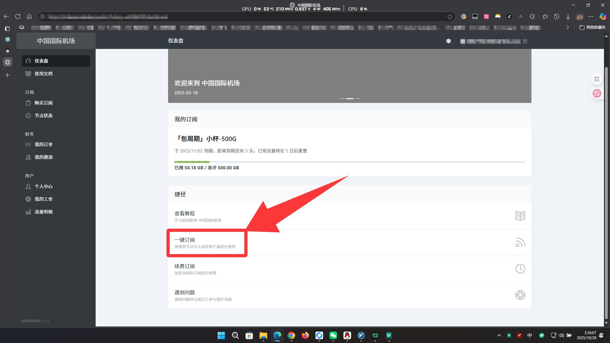
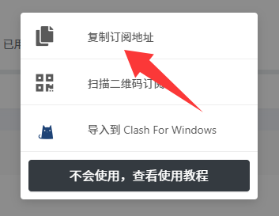
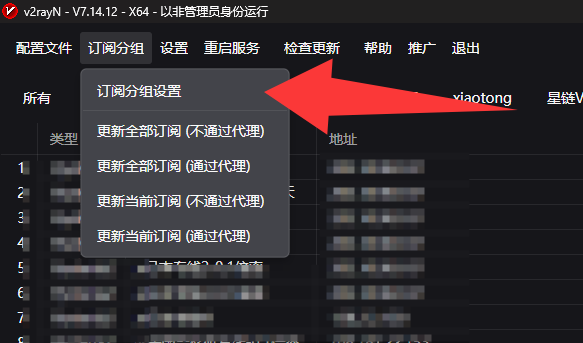
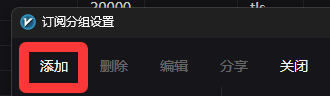
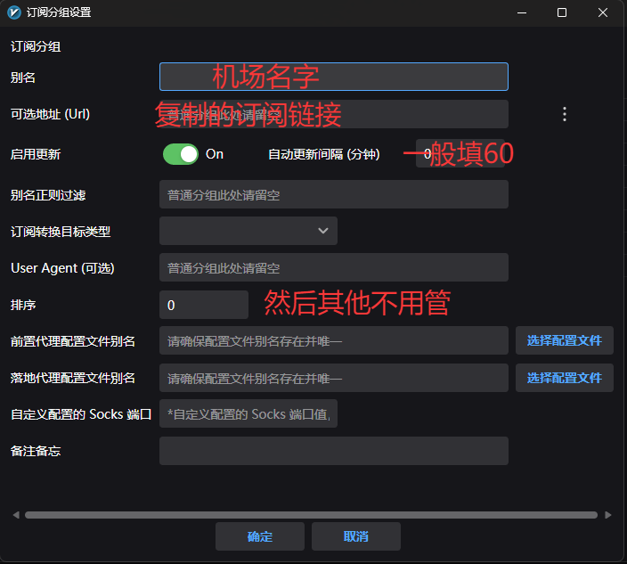
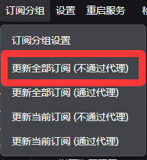
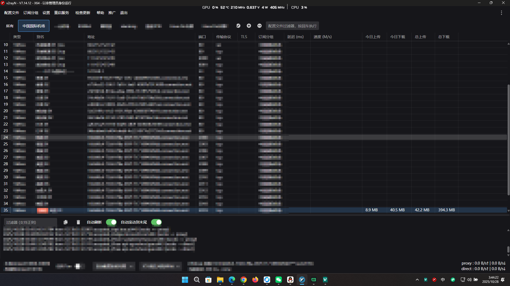
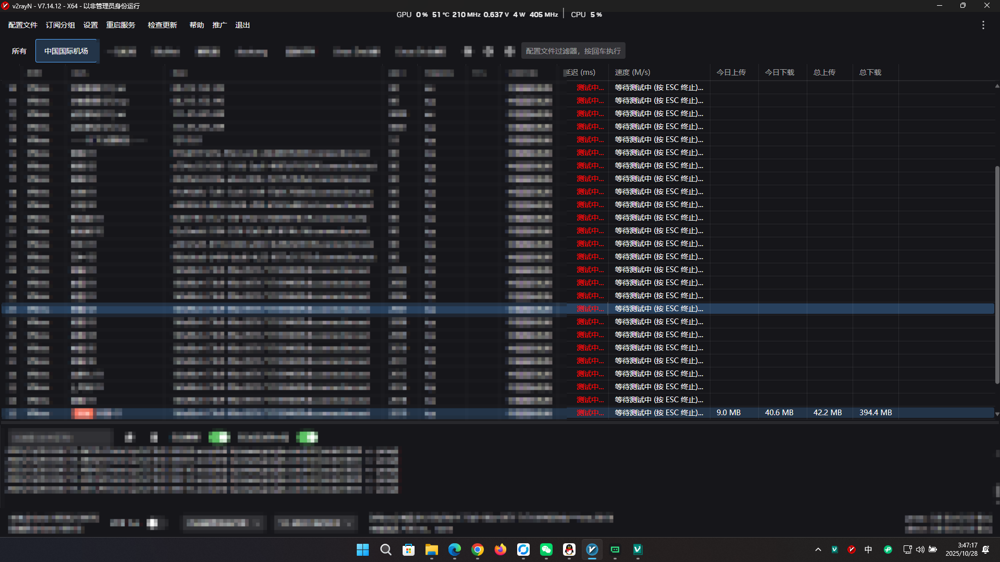
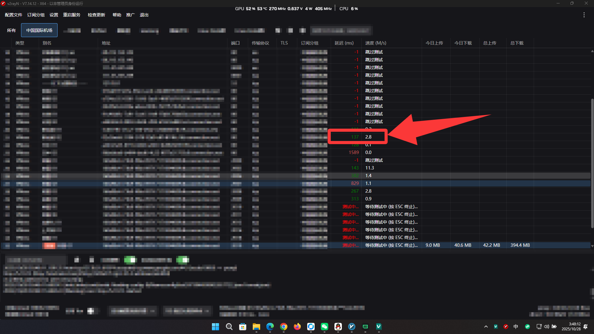
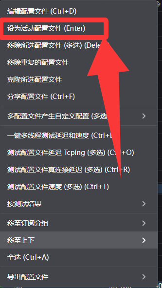

机场配置教程：从订阅到使用的完整指南
本教程将指导你如何将机场订阅配置到V2RayN客户端，并正确使用节点服务。
📋 前置要求
在开始学习本文内容之前，你需要：
- ✅ 已购买机场订阅服务
- ✅ 已安装V2RayN客户端
- ✅ 准备好灵活的操作和清晰的思路
🎯 学习目标
完成本教程后，你将能够：
- ✅ 正确配置机场订阅
- ✅ 正确更新订阅信息
- ✅ 正确选择和使用节点
第一部分：正确配置机场
步骤1：获取订阅链接
第一步：点击一键订阅
确保你已购买机场服务，然后在机场网站找到订阅按钮。

步骤2：导入节点到V2RayN
从机场复制订阅地址
在机场页面找到"复制订阅地址"按钮并点击复制。

打开V2RayN订阅设置
在V2RayN客户端中找到"订阅分组"选项，点击"订阅分组设置"。

添加新的订阅
点击"添加"按钮创建新的订阅分组。

填写订阅信息
按照图示内容填写订阅信息，包括订阅地址和备注名称。

第二部分：正确更新订阅
更新订阅内容
填写保存后，点击"更新全部订阅（不通过代理）"来获取最新节点列表。

查看节点列表
更新成功后，你将看到完整的节点列表显示在客户端中。

第三部分：正确使用节点
测速节点性能
使用快捷键 Ctrl + E 开始对所有节点进行测速。

选择优质节点
测速完成后，找到一个延迟低、速度快的节点。

设置为活动节点
右键点击选中的节点，选择"设为活动配置文件"来启用该节点。

🎉 恭喜完成！
你已经成功完成机场配置、节点更新和使用的全部流程。现在可以畅享网络服务了！